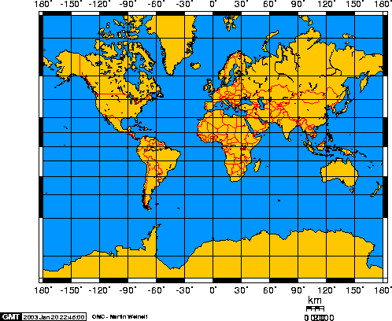

The projection you use is going to change everything, but this will work assuming a Mercator projection:

<html>
<head>
<script language="Javascript">
var dot_size = 3;
var longitude_shift = 55;   // number of pixels your map's prime meridian is off-center.
var x_pos = 54;
var y_pos = 19;
var map_width = 430;
var map_height = 332;
var half_dot = Math.floor(dot_size / 2);
function draw_point(x, y) {
    dot = '<div style="position:absolute;width:' + dot_size + 'px;height:' + dot_size + 'px;top:' + y + 'px;left:' + x + 'px;background:#00ff00"></div>';
    document.body.innerHTML += dot;
}
function plot_point(lat, lng) {
    // Mercator projection

    // longitude: just scale and shift
    x = (map_width * (180 + lng) / 360) % map_width + longitude_shift;

    // latitude: using the Mercator projection
    lat = lat * Math.PI / 180;  // convert from degrees to radians
    y = Math.log(Math.tan((lat/2) + (Math.PI/4)));  // do the Mercator projection (w/ equator of 2pi units)
    y = (map_height / 2) - (map_width * y / (2 * Math.PI)) + y_pos;   // fit it to our map

    x -= x_pos;
    y -= y_pos;
    console.log(x)
    console.log(y)

    draw_point(x - half_dot, y - half_dot);
}
</script>
</head>
<body onload="plot_point( -8247861.1000836585, 4970241.327215323)">
    <!-- image found at http://www.math.ubc.ca/~israel/m103/mercator.png -->
    
</body>
</html>